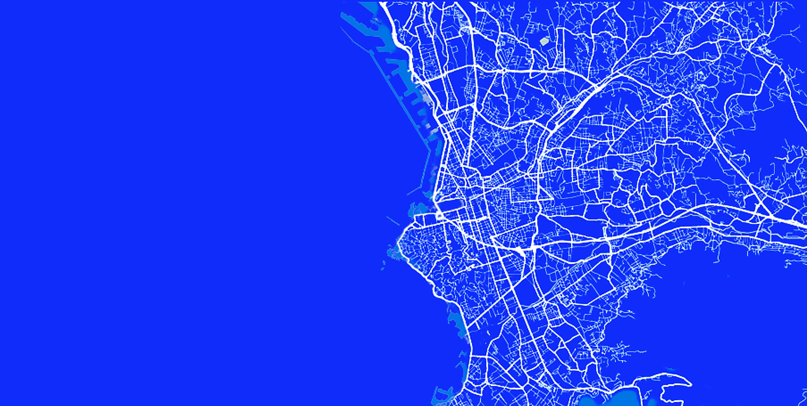
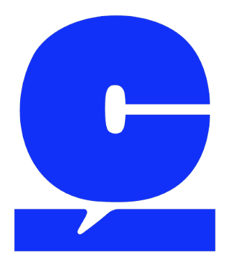
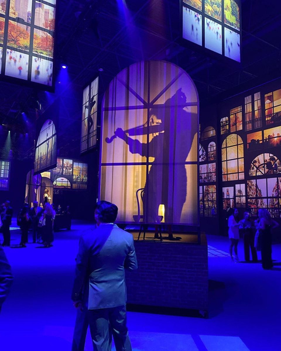
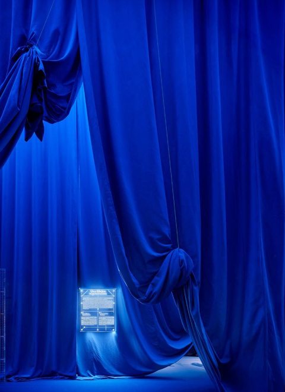
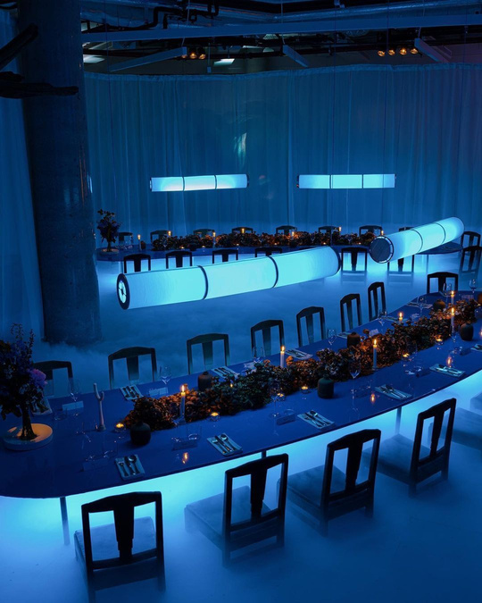
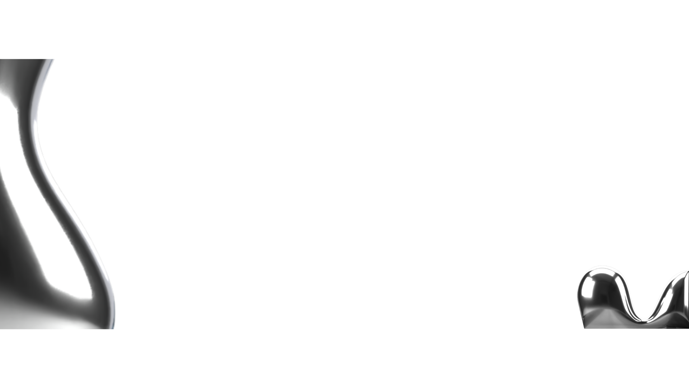

Ça Parle travaille avec une lecture sensible des dynamiques humaines : ce qui rassemble, ce qui embarque, ce qui transporte.
Chaque projet devient un moment où l'énergie circule réellement, où les gens ne sont plus spectateurs mais participants. L'objectif est clair : générer une intensité émotionnelle capable de laisser une empreinte durable.
L'agence développe aussi une dimension éditoriale et culturelle qui lui permet de créer un univers identifiable, nourri par la scène marseillaise, ses codes, son langage, ses talents.
Ce double positionnement renforce sa légitimité auprès des audiences urbaines, culturelles et corporate, et ancre Ça Parle dans un rôle d'acteur culturel, et non uniquement d'exécutant.
Parce qu'un projet réussi ne se contente pas d'exister.
Il circule, il rassemble, il marque.
Chaque projet débute par une intention claire. Nous traduisons l'ADN d'une marque en expérience sensorielle. La cuisine devient un médium, au même titre que la lumière, l'espace ou le rythme.
Un événement se pense comme une composition. Volumes, matières, couleurs, gestes, temporalité : tout s'articule dans une esthétique maîtrisée.
Nous explorons, testons, anticipons. Formats inattendus, scénographies audacieuses, collaborations transversales : un mouvement contemporain, exigeant et pointu.
La créativité prend sens dans la précision. Maîtrise technique, sélection rigoureuse des produits, équipe experte : une expérience fluide et irréprochable.
Passez à table avec notre studio food →

Ça Parle travaille avec une lecture sensible des dynamiques humaines : ce qui rassemble, ce qui embarque, ce qui transporte.
Chaque projet devient un moment où l'énergie circule réellement, où les gens ne sont plus spectateurs mais participants. L'objectif est clair : générer une intensité émotionnelle capable de laisser une empreinte durable.
L'agence développe aussi une dimension éditoriale et culturelle qui lui permet de créer un univers identifiable, nourri par la scène marseillaise, ses codes, son langage, ses talents.
Ce double positionnement renforce sa légitimité auprès des audiences urbaines, culturelles et corporate, et ancre Ça Parle dans un rôle d'acteur culturel, et non uniquement d'exécutant.
Parce qu'un projet réussi ne se contente pas d'exister.
Il circule, il rassemble, il marque.
Il fait parler.
De l'intention au moment vécu : direction artistique et production événementielle, sur-mesure.



Des dispositifs sur-mesure : brand events, scénographies, soirées, activations. On part du terrain, on signe l'émotion.
Dès l'entrée, le décor impose le ton. Un lieu magnifique, une déco soignée jusque dans le moindre détail, et cette lumière bleue devenue la signature de Ça Parle. Hyper original, classe, chic, et surtout, ça change. On sent qu'on passe un cap.
Ça Parle, c'est réunir les talents et leur donner de la lumière. Rien qu'à voir ceux présents ce soir, ça annonce du positif. Faire bouger les choses à Marseille, montrer qu'ici aussi on sait faire : on en avait besoin.
Que dire ? Magnifique. Habitués aux soirées marseillaises, on a été soufflés. L'énergie, les détails cachés dans le décor, cette signature qu'on ne retrouve nulle part ailleurs. Inimitable. Ça Parle, vraiment, et ça va continuer de faire parler.
Ce ne sont pas nos idées qui nous différencient, mais le fait que vous ayez envie de travailler avec nous. Pour que ça parle, il faut d'abord que ça matche.
Chaque projet est une nouvelle recette à élaborer. On repart de zéro, en créant un concept sur-mesure à l'aide de nos talents, experts dans leurs domaines.
Pas de frais cachés. Une rémunération agence fixe et des coûts transparents sur l'ensemble du projet. On s'adapte à votre budget, en vous aiguillant au mieux.

Dites-nous ce que vous voulez faire vibrer.
On revient vers vous sous 48h, sans fioriture.